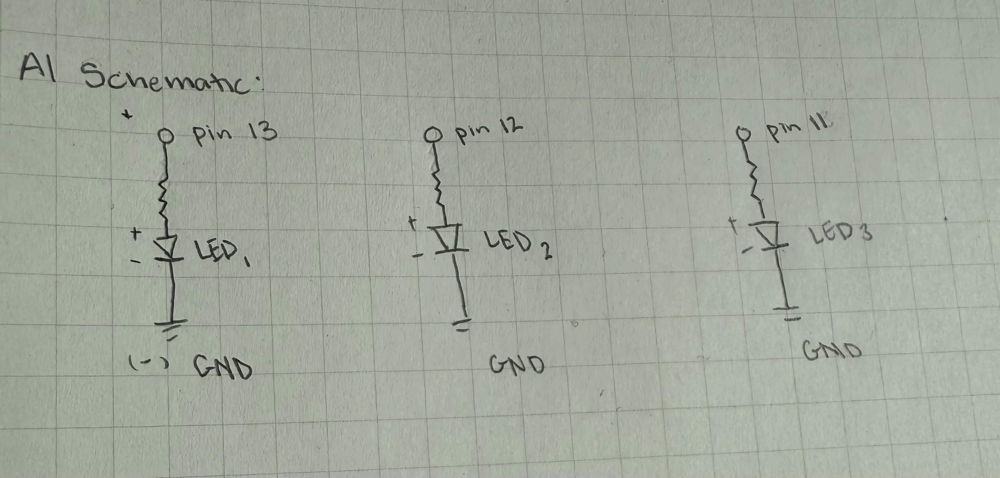
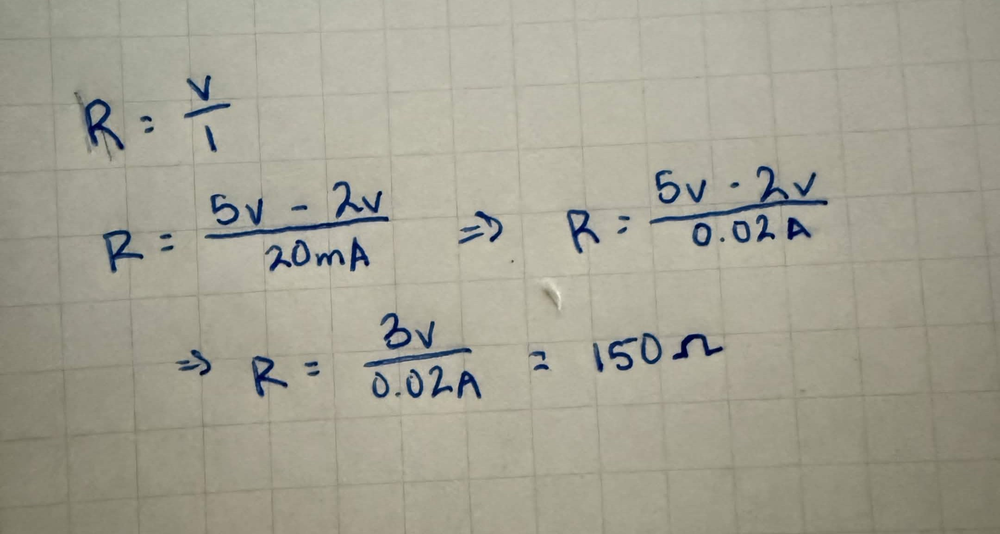
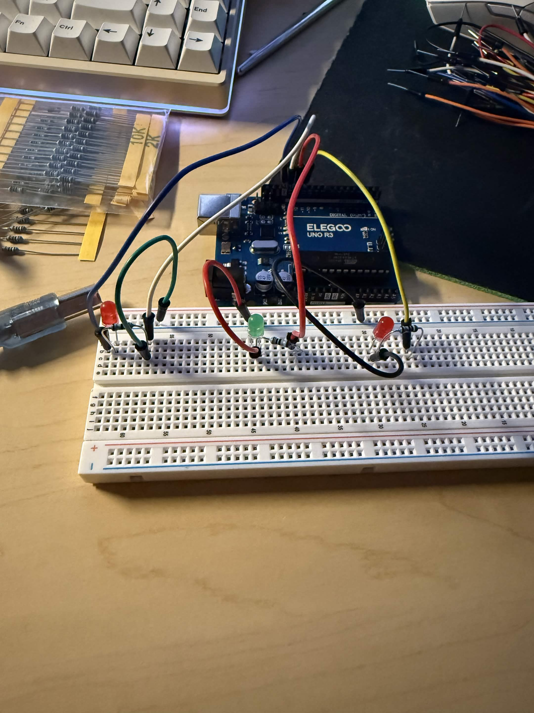
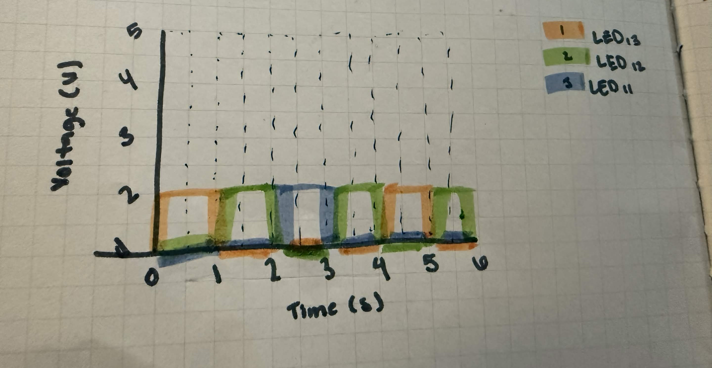
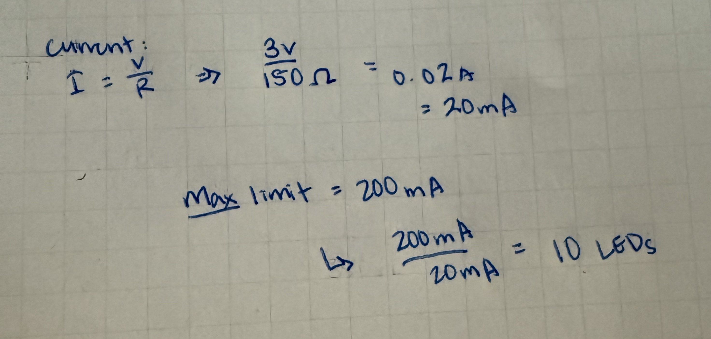

In this schematic, it shows three LEDs that are each connected to pins 13, 12, and 11 on the Arduino board each LED has its own resistor of approximately 150 ohms each. The LEDs also share the same common ground connection or the "GND"
Resistor Calculations

This is my calculations using Ohm's law to find the appropiate resistor value for each LED. Based of my calculations each resistor should have a value of 150 ohms per LED to limit the current and prevent burning out the LEDS or Arduino board.
Circuit

This is my completed physical model of the circuit. It is using a breadboard, three LEDs, three resistors, and many jumper wires. Each LED has resistor and from the resistor is connected to a digital pin. Though for the red LED on the left furthest side it has a wire connecting the LED to the common ground or "GND" pin, to which the LED is connected to its own resistor, and a jumper wire connecting the resistor to pin 13. There is also a wire that is connecting that resistor to the negative rail of the breadboard.
Firmware
This is the snippet of code I created on Arduino! The program turns on each LED alternately, when it gets to the third LED it goes back to the second one and sequence repeats.
void setup() {
pinMode(13, OUTPUT); // initialize digital pin 13 as an output for the first LED
pinMode(12, OUTPUT); // initialize digital pin 12 as an output for the first LED
pinMode(11, OUTPUT); // initialize digital pin 11 as an output for the first LED
}
// the loop function runs over and over again forever
void loop() {
digitalWrite(13, HIGH); // changing state of pin 13 LED to HIGH/ON
// Pin 12 and 11 are turned off
digitalWrite(12, LOW);
digitalWrite(11, LOW);
delay(1000); // Pin 13 LED is on for one second
digitalWrite(13, LOW); // Turning off the pin 13 LED
digitalWrite(12, HIGH); // changing state of pin 12 LED to HIGH/ON
digitalWrite(11, LOW); // Pin 11 is still off
delay(1000); // Pin 12 stays on for a second
digitalWrite(13, LOW); // Pin 13 stays off
digitalWrite(12, LOW); // Turning off the pin 12 LED
digitalWrite(11, HIGH); // changing state of pin 11 LED to HIGH/ON
delay(1000); // Pin 11 stays on for a second
digitalWrite(13, LOW); // Pin 13 stays off
digitalWrite(12, HIGH); // changing state of pin 12 LED to HIGH/ON
digitalWrite(11, LOW); // Pin 11 is turned off
delay(1000); // Pin 12 stays on for a second before sequence repeats
}
Finished Product

This GIF shows the final product of my circuit and Arduino program. Each LED blinks one at a time, staying on for about a second before turning off and the next LED turning on. The sequence then continuously repeats.
Additional Questions
Question 1: Draw a graph where the X axis is time and Y is voltage across the LEDs. Draw a line for each of your 3 LEDs.

- This graph shows the voltage of each LED and how it changes as it switches on and off during the sequence.
Question 2: How many LEDs could you blink independently with your Arduino? How much current would that draw?

- This picture shows the calculations I made to estimate how many LEDs could blink independently with the Arduino board. I calculated an estimate of 10 LEDs by taking the estimated amount of resitance needed for each LED and plugged it into a equation to solve for the current, which is voltage divided by the resistance ( 3 volts / 150 ohms), leaving us with 0.02 Amps or 20mA. Then, I took the max limit the Arduino board can take which is 200mA and divided it by the current ( 200mA / 20mA), this resulted in a value of 10 possible LEDs.
Question 3: How fast do you need to blink your LEDs until you no longer can
tell that they are blinking?
Fun fact: Human perception of flashing lights can
range widely! Our eyes all capture visual movement at different speeds ranging
from fewer than 30 flashes per second as steady light to over 60 flashes per second
as steady light. Play around with your blink speeds and find the speed of your own eyes!
- Testing this with my own eyes I estimated about 40-45 times per second!
Question 4: Did you use AI tools in completing this assignment? If yes please provide details on how/when, as well as a brief reflection. If no, you can either leave this question black, or provide other information if you'd like.
- For this assignment, I did not AI tools to complete this assignment. However, I did google some html syntax for my code snippet. I also used some notes I have from my HCDE 310 and 438 classes for some other HTML and CSS syntax.